Prenditi cura della tua bellezza con i prodotti biologici
Naturaverde
Naturaverde è un ecommerce made in Italy che si distingue sul mercato del beauty per l’alto livello qualitativo degli ingredienti utilizzati per creare i cosmetici. I prodotti Naturaverde sono indicati per la cura del corpo di ogni persona.
E-commerce UX/UI REDESIGN LOGO Prototyping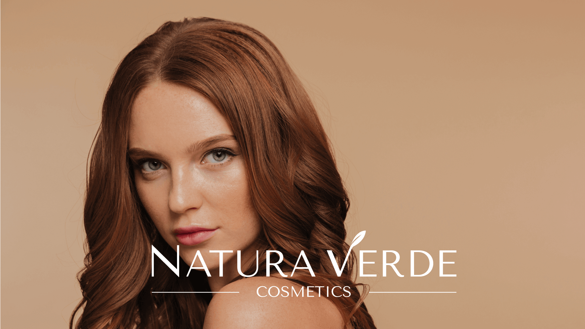
[Challenges]
L'obiettivo del progetto era duplice, da un lato dare una nuova identità al brand rendendolo più moderno e dall'altro ottimizzare il sito web migliorando l’esperienza utente dalle prime fasi di scelta dei prodotti fino al checkout.

[Restyling logo]
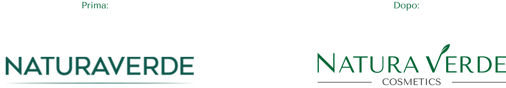
Nuovo font e nuova palette colori per rendere il brand riconoscibile e moderno e per evidenziare il concetto di natura e l'anima biologica. La tagline “cosmetics” definisce l’identità dell’azienda e rafforza il posizionamento del brand.
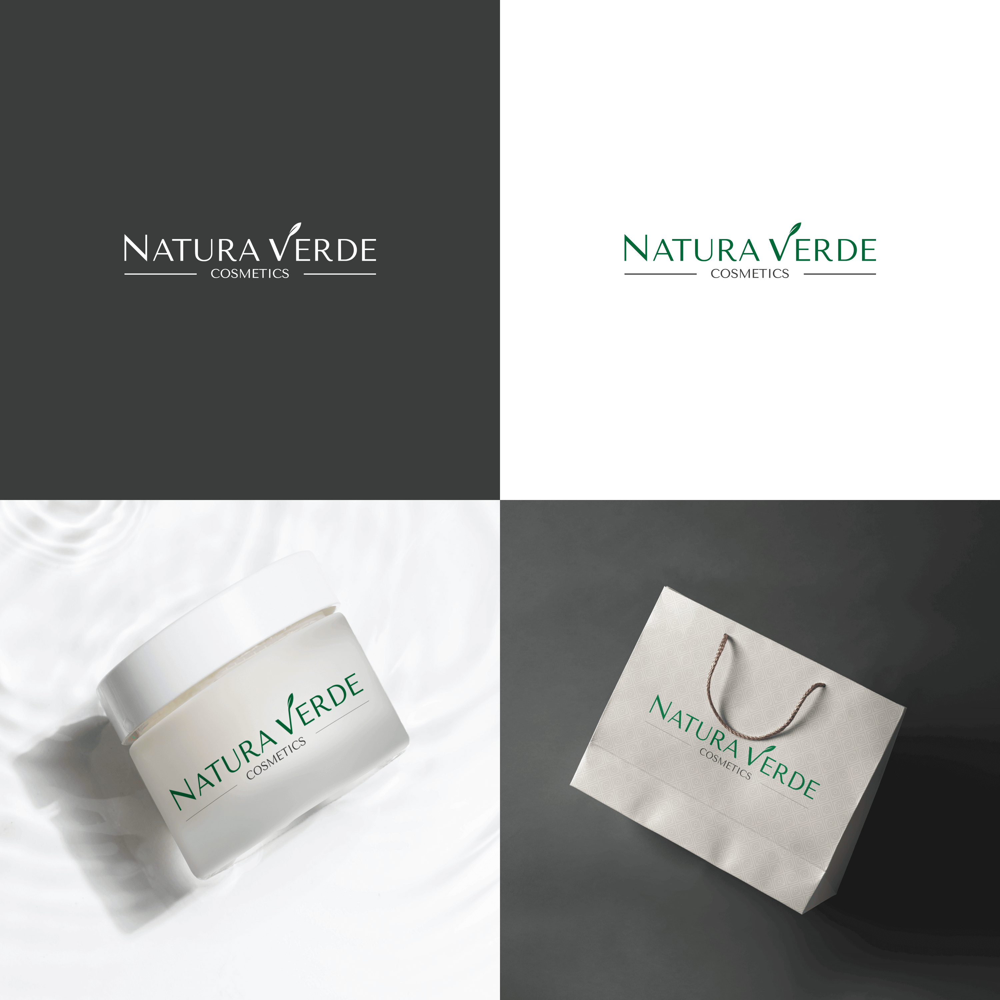
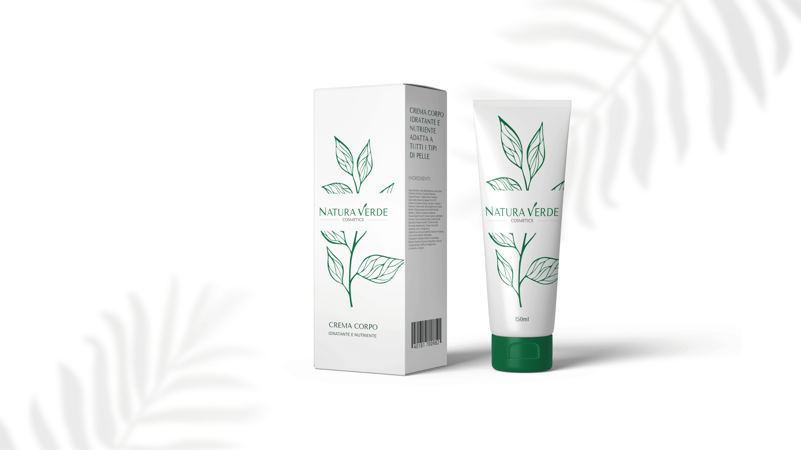
[Research]
Il mio lavoro è iniziato da una ux research. Attraverso un’analisi euristica ho evidenziato i problemi di user experience del sito
e con una ricerca di mercato sono riuscita a capire come NATURAVERDE si presenta rispetto ai suoi competitors diretti
e ho stabilito il suo target (donne, di età tra i 18 ed i 55 anni e, un numero inferiore di utenti uomini).
Attraverso un sondaggio sono riuscita ad avere dei feedback direttamente dagli utenti
e quindi ho identificato meglio le loro necessità e raccolto informazioni sulle loro esperienze d'acquisto.
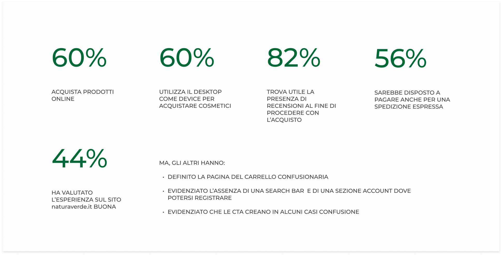
[UX Design]
Gli insight ricavati sono stati il punto di partenza per le successive fasi del progetto.
Per prima cosa ho definito delle user personas e i relativi user journey, per consentirmi di evidenziare obiettivi, esigenze e frustrazioni degli utenti, e procedere così a progettare le migliori soluzioni ai problemi emersi.
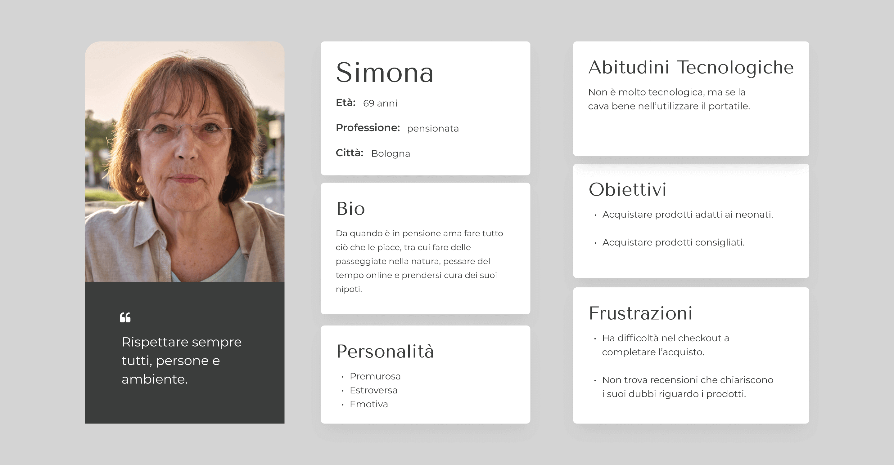
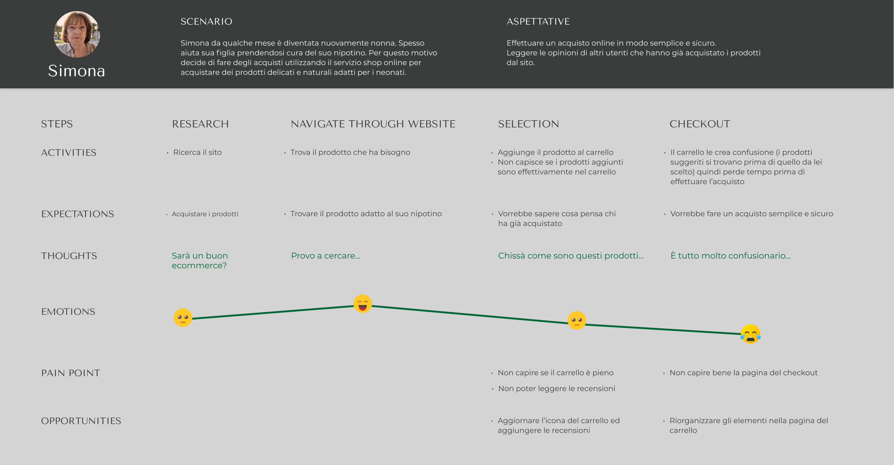
Ho riprogettato l'architettura dell'informazione, rivedendola e cercando di dare una posizione migliore ai contenuti.
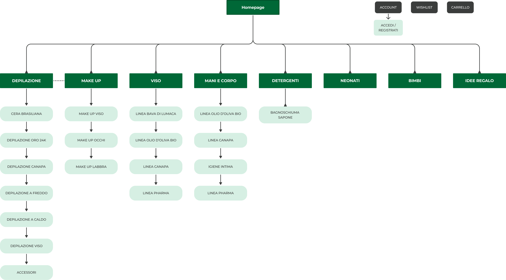
Per capire come organizzare la struttura generale e gli schemi di navigazione del sito ho ideato dei wireframe.
[Visual design]
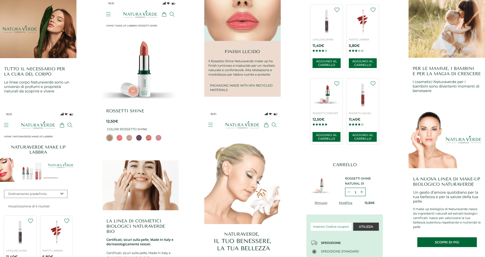
Infine, dopo aver definito tutti gli elementi visivi, ho creato un prototipo e con un usability test ho testato le mie idee e validato i miglioramenti apportati al sito.
I dati emersi sono stati i seguenti:
· la riprogettazione del menu consente all'utente di selezionare le categorie di prodotto per esigenze e tipo di linea in maniera semplice;
· la pagina dedicata al singolo prodotto presenta tutte le informazioni fornendo l'elenco degli ingredienti con un occhio di riguardo alle caratteristiche che ne garantiscono la sicurezza dermatologica (obiettivo del brand);
· il processo di checkout ora si presenta facile ed intuitivo.
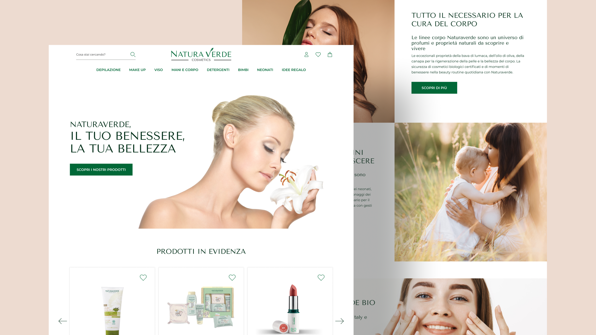